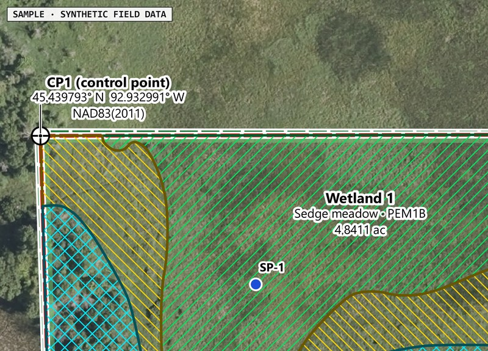
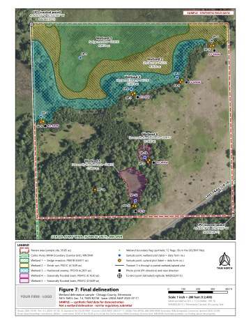
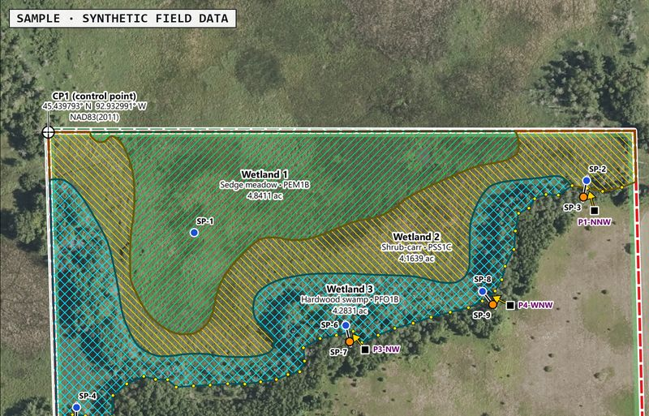
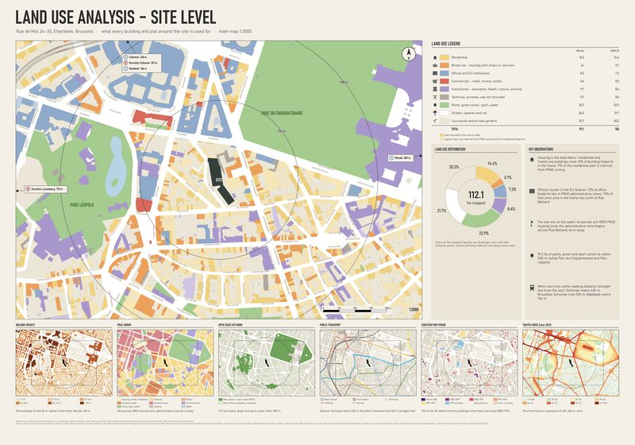
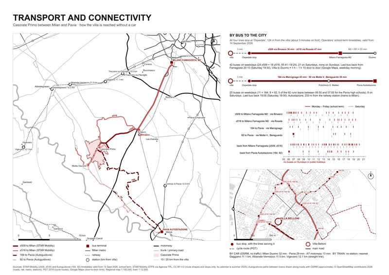

Minnesota
39.85 acres, Chisago County: topography, soils, NWI/PWI, flood, aerials, delineation (Circular 39, Eggers & Reed).

Same sheet, your report format synthetic field data
White-label figure sets with shapefiles, DXF and ORM tables. Samples: Minnesota, California, Texas.
Send one filed figure for a free redraw
First job: you pay only if you use the maps.


39.85 acres, Chisago County: topography, soils, NWI/PWI, flood, aerials, delineation (Circular 39, Eggers & Reed).

Same sheet, your report format synthetic field data

39.83 acres, Sacramento County: vicinity, delineation, photo points, impacts, 401/1602 sheets. Standards checklist listing each exception, on request.

27.85 acres, Fort Bend County: survey abstract, property lines, aerials, soils, NWI, delineation.
Synthetic field data on real sites (California: conservation easements; Minnesota: state wildlife management area); no wetland or jurisdictional finding. Drive mirror.
Free test
Send one figure from a report you've already filed (a public one); I'll redraw it in your format within 2 business days.
Field data
GNSS exports with data-form IDs and the survey boundary; please remove landowner names.
Deliverables
Vector PDFs in your title block, plus GIS/CAD files.


By email or a 15-minute video call (8–11 am Pacific, 10 am–1 pm Central). I reply the same US business day: danirkantserov@gmail.com LinkedIn
I'm an architecture student at Politecnico di Milano and do GIS/CAD drafting in QGIS.
The service is new: no paid delineation jobs yet, which is why the first test is free.
Privacy (prospects). Danir Kantserov, Milan, is the controller. I use your firm's name and business email, taken from your public website, to offer this service: one introduction and one follow-up, on legitimate interest. Gmail (Google) and Claude (Anthropic), both in the US, process the messages. I keep the data until 31 Jan 2027 unless we start working together; a "no" goes on a do-not-contact list that I keep. You can object, ask for access or erasure, or complain to the Italian Garante: reply to my email.
No cookies; GitHub Pages logs IP addresses.